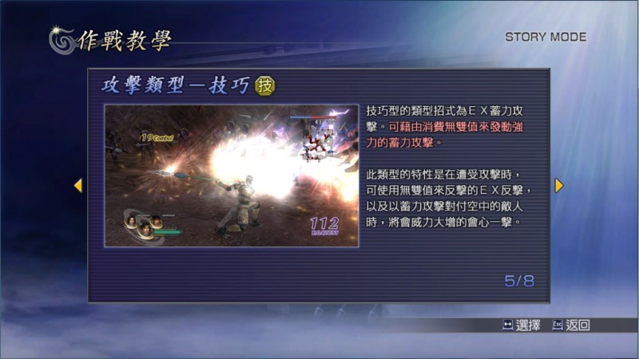
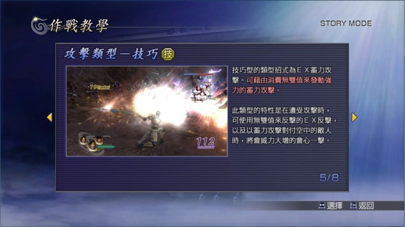

速：入門型？低難度適用？
第一個來看的是「速」，對中文來講，這個字似乎就是速度的意思，可能表示打得快、跑得快吧？但從日文來看，「速」還給人「快速上手」的印象，因此速型對日本人而言，字面上看來會覺得是最容易上手、最適合剛開始玩的人拿來進行遊戲的攻擊類型。也就是入門用。
事實上也是如此，我們《無雙 OROCHI》可以發現，速型角色在「容易」難度簡直是三種類型最強的，尤其那些類型招式不用消耗無雙，打出來不是遠距攻擊就是範圍攻擊，清敵人效率之高保證過癮，魏延、夏侯惇就是其中熱門角色。但朝向「普通」難度挑戰後便開始發現，速型在攻擊時容易被中斷，而這正是挑戰「困難」難度的主要致命傷。
力：娛樂型？普通難度適用？
第二個來看「力」，對中文來講，這個字似乎是攻擊力最強的意思。但從日文來看，「力」還給人「不需要什麼招式，就能發揮功用。」的印象，因此力型對日本人而言，字面上看來會覺得是可能有破綻、但犧牲一些東西，便能帶來更大好處的攻擊類型。因此屬於「換換口味用」。
技：專家型？高難度適用？
第三個來看「技」，對中文來講，這個字似乎是招式一堆的感覺。從日文來看也確實是這種感覺，不過「技」還有「專家適用」的印象，因此技型對日本人而言，字面上看來會覺得是最後階段該去使用的攻擊類型。
感覺上《無雙 OROCHI》也有這樣的傾向，技型出招的破綻通常比「速」「力」少，熟練以上、達人未滿的玩家，通常使用技型比較能在「困難」難度中過關。（達人的話選什麼都強，不然就不叫達人了。）
從字面上分高下
所以如果以日本人就字面上來看的話，由入門到專業的排列會是：
速 → 力 → 技
最後
以上只是解釋日本人就字面上的感覺，對「力」「速」「技」三種攻擊類型會有怎樣的觀感，並不等於遊戲真的是這樣設定，正如文前所說：「別太看得起 KOEI 了！他是不可能設定得出平衡點的。」
如果你找到答案，確定哪種攻擊類型最強？那其實是你強，並不是真的哪種攻擊類型強 XDDD
最後還是來看官方說法吧！
 
